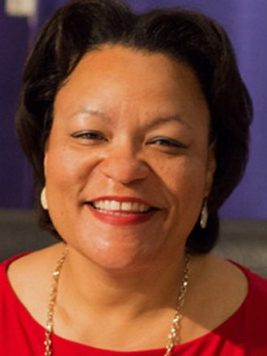

The holiday of Mardi Gras is celebrated in all of Louisiana, including the city of New Orleans. Celebrations are concentrated for about two weeks before and through Shrove Tuesday, the day before Ash Wednesday (the start of lent in the Western Christian tradition). Usually there is one major parade each day (weather permitting); many days have several large parades. The largest and most elaborate parades take place the last five days of the Mardi Gras season. In the final week, many events occur throughout New Orleans and surrounding communities, including parades and balls (some of them masquerade balls).
The parades in New Orleans are organized by social clubs known as krewes; most follow the same parade schedule and route each year. The earliest-established krewes were the Mistick Krewe of Comus, the earliest, Rex, the Knights of Momus and the Krewe of Proteus. Several modern "super krewes" are well known for holding large parades and events, such as the Krewe of Endymion (which is best known for naming celebrities as grand marshals for their parades), the Krewe of Bacchus (similarly known for naming celebrities as their Kings), as well as the Zulu Social Aid & Pleasure Club—a predominantly African American krewe. Float riders traditionally toss throws into the crowds. The most common throws are strings of colorful plastic beads, doubloons, decorated plastic "throw cups", Moon Pies, and small inexpensive toys, but throws can also include lingerie and more sordid items. Major krewes follow the same parade schedule and route each year.
While many tourists center their Carnival season activities on Bourbon Street and in New Orleans and Dauphin, major parades originate in the Uptown and Mid-City districts and follow a route along St. Charles Avenue and Canal Street, on the upriver side of the French Quarter. Mardi Gras day traditionally concludes with the "Meeting of the Courts" between Rex and Comus. While many tourists center their Carnival season activities on Bourbon Street and in New Orleans and Dauphin, major parades originate in the Uptown and Mid-City districts and follow a route along St. Charles Avenue and Canal Street, on the upriver side of the French Quarter. Mardi Gras day traditionally concludes with the "Meeting of the Courts" between Rex and Comus.
The first record of Mardi Gras being celebrated in Louisiana was at the mouth of the Mississippi River in what is now lower Plaquemines Parish, Louisiana, on March 2, 1699. Iberville, Bienville, and their men celebrated it as part of an observance of Catholic practice. The date of the first celebration of the festivities in New Orleans is unknown. A 1730 account by Marc-Antione Caillot celebrating with music and dance, masking and costuming (including cross-dressing). Excerpt | A Company Man - The Book An account from 1743 that the custom of Carnival balls was already established. Processions and wearing of masks in the streets on Mardi Gras took place. They were sometimes prohibited by law, and were quickly renewed whenever such restrictions were lifted or enforcement waned. In 1833 Bernard Xavier de Marigny de Mandeville, a rich plantation owner of French descent, raised money to fund an official Mardi Gras celebration.
In 1856 21 businessmen gathered at a club room in the French Quarter to organize a secret society to observe Mardi Gras with a formal parade. They founded New Orleans' first and oldest krewe, the Mystick Krewe of Comus. According to one historian, "Comus was aggressively English in its celebration of what New Orleans had always considered a French festival. It is hard to think of a clearer assertion than this parade that the lead in the holiday had passed from French-speakers to Anglo-Americans. ... To a certain extent, Americans 'Americanized' New Orleans and its Creoles. To a certain extent, New Orleans 'creolized' the Americans. Thus the wonder of Anglo-Americans boasting of how their business prowess helped them construct a more elaborate version than was traditional. The lead in organized Carnival passed from Creole to American just as political and economic power did over the course of the nineteenth century. The spectacle of Creole-American Carnival, with Americans using Carnival forms to compete with Creoles in the ballrooms and on the streets, represents the creation of a New Orleans culture neither entirely Creole nor entirely American."
In 1875 Louisiana declared Mardi Gras a legal state holiday. War, economic, political, and weather conditions sometimes led to cancellation of some or all major parades, especially during the American Civil War, World War I and World War II, but the city has always celebrated Carnival.
In 1979 the New Orleans police department went on strike. The official parades were canceled or moved to surrounding communities, such as Jefferson Parish, Louisiana. Significantly fewer tourists than usual came to the city. Masking, costuming, and celebrations continued anyway, with National Guard troops maintaining order. Guardsmen prevented crimes against persons or property but made no attempt to enforce laws regulating morality or drug use; for these reasons, some in the French Quarter bohemian community recall 1979 as the city's best Mardi Gras ever.
In 1991 the New Orleans City Council passed an ordinance that required social organizations, including Mardi Gras Krewes, to certify publicly that they did not discriminate on the basis of race, religion, gender or sexual orientation, to obtain parade permits and other public licenses.Shortly after the law was passed, the city demanded that these krewes provide them with membership lists, contrary to the long-standing traditions of secrecy and the distinctly private nature of these groups. In protest—and because the city claimed the parade gave it jurisdiction to demand otherwise-private membership lists—the 19th-century krewes Comus and Momus stopped parading. Proteus did parade in the 1992 Carnival season but also suspended its parade for a time, returning to the parade schedule in 2000.
Several organizations brought suit against the city, challenging the law as unconstitutional. Two federal courts later declared that the ordinance was an unconstitutional infringement on First Amendment rights of free association, and an unwarranted intrusion on the privacy of the groups subject to the ordinance. The US Supreme Court refused to hear the city's appeal from this decision. Today, New Orleans krewes operate under a business structure; membership is open to anyone who pays dues, and any member can have a place on a parade float.
 LaToya Cantrell (born April 3, 1972) is an American politician serving as the Mayor of New Orleans, Louisiana, a post she has held since May 7, 2018. Cantrell, a Democrat, is the first black woman to hold the post. Before becoming mayor, Cantrell represented District B on the New Orleans City Council from 2012–2018.